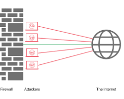

¿Qué es la seguridad en Redes?
 Material de Apollo
Material de Apollo
La seguridad en redes consiste en las políticas, procesos y prácticas adoptadas para prevenir, detectar y monitorizar el acceso no autorizado, el mal uso, la modificación o la denegación de una red informática y sus recursos accesibles.
Su objetivo es proteger la confidencialidad, integridad y disponibilidad de la información.
Amenazas Comunes
Para proteger una red, primero debemos conocer a qué nos enfrentamos:
- Malware: Software malicioso como virus, gusanos y troyanos.
- Phishing: Engaños para robar credenciales de acceso.
- Ataques DDoS: Saturación de la red para dejarla fuera de servicio.
- Ataques de Interceptación (Man-in-the-Middle): Cuando un atacante "escucha" la comunicación entre dos puntos.
Capas de Protección (Herramientas)
Una red segura utiliza varias capas de defensa:
- Firewall (Cortafuegos):Filtra el tráfico entrante y saliente basado en reglas de seguridad.
- Antivirus/Antimalware:Escanea y elimina software peligroso de los dispositivos.
- VPN (Red Privada Virtual):Cifra la conexión para que los datos viajen protegidos por internet.
- IDS/IPS:Sistemas que detectan y previenen intrusiones en tiempo real.
Mejores Prácticas de Seguridad
Para mantener una red robusta, es indispensable seguir estos consejos:
- Contraseñas Fuertes: Uso de combinaciones complejas y autenticación de dos factores (2FA).
- Actualizaciones de Software: Parchear vulnerabilidades conocidas en los sistemas operativos.
- Cifrado de Datos: Asegurarse de que la información sensible sea ilegible para personas no autorizadas.
- Educación del Usuario: El eslabón más débil suele ser el humano; la capacitación es clave.
Arquitectura de Defensa en Profundidad
Para proteger una red moderna, no basta con un solo programa; se necesita una estrategia de capas. Imagina que la red es un castillo:
El Perímetro (La Muralla)

El Firewall actúa como la muralla del castillo. Inspecciona cada paquete de datos que intenta entrar o salir. Si el tráfico no cumple con las reglas de seguridad predefinidas, el Firewall lo bloquea inmediatamente.
Control de Acceso (Los Guardias)
Aquí entran los protocolos de autenticación. No basta con una contraseña; las redes seguras implementan MFA (Autenticación de Múltiples Factores), donde el usuario debe confirmar su identidad mediante un código en su celular o una huella digital.
Monitorización (Vigilancia 24/7)
Los sistemas IDS (Detección de Intrusiones) y IPS (Prevención de Intrusiones) analizan el comportamiento de la red en busca de anomalías. Si un usuario que normalmente descarga 10 MB al día empieza a descargar 50 GB de golpe, el sistema lanza una alerta de posible fuga de datos.
Tecnologías de Cifrado y Privacidad
El cifrado es la técnica de convertir información legible en un código indescifrable. Es vital para dos escenarios:
- Datos en tránsito: Uso de protocolos SSL/TLS (el candadito verde del navegador) para que nadie pueda "leer" lo que escribes en una web.
- Datos en reposo: Cifrado de discos duros y bases de datos para que, si alguien roba físicamente un servidor, no pueda extraer la información.
Las VPNs (Virtual Private Networks) crean un túnel seguro sobre una red pública (Internet), permitiendo que empleados remotos se conecten a la oficina como si estuvieran físicamente allí, manteniendo la privacidad total del tráfico.